Made to match task, designed to ease

Figma, WireFrame, User Journey Map, Iterative Design
Group Project
UX Research, Prototyping
Taski is a task-based social matching platform designed for young adults who prefer doing activities with others rather than alone. Instead of relying on appearance or long conversations, Taski connects users through shared tasks—whether it’s grabbing a meal, studying together, attending events, or completing everyday errands. By focusing on action first and interaction second, Taski reduces the psychological burden of asking others to join and eliminates the awkwardness of mismatched expectations. The system enables quick, low-commitment pairing, helping users form genuine connections through simple, meaningful moments of doing things together.
Why do we need an app for task matching ?
Overview:
While dating-app usage continues to grow globally, with over 36B+ users. The purpose behind social matching has significantly shifted. According to Bumble’s 2024 Year in Swipe, users (especially Gen Z) are increasingly using these platforms not for romantic relationships but for sharing lifestyles, finding companions for activities, and expanding their social circles. Similarly, SSRS’s 2024 report The Public and Online Dating, highlights a growing emphasis on “nanoships” (micro-connections), lifestyle compatibility, and task-based interactions, marking a move away from traditional romance-oriented motivations.
Problem:
1. Appearance-centered evaluation: creates objectification risks and fails to match people based on shared activities
2. Gamified reward systems (likes, swipes, streaks) hinder the formation of genuine, meaningful relationships
3. Fast-paced scrrening: reinforces existing biases and prejudices.
4. No existing platform focuses specifically on task-oriented social matching
Goals:
1. Built around doing things together: Appearance-based matching -> Activity-based pairing.
2. Fostering authentic human connection
Target Audience
Our target audience focuses on youth aged 18–30 who prefer not to do activities alone. This group can be divided into two segments:
Peripheral Users : Passive users who are not sure what they want to do. They prefer browsing, quick usage, and easily joining existing tasks.
Core Users: Active users who proactively seek companions for specific tasks or activities they already have in mind.
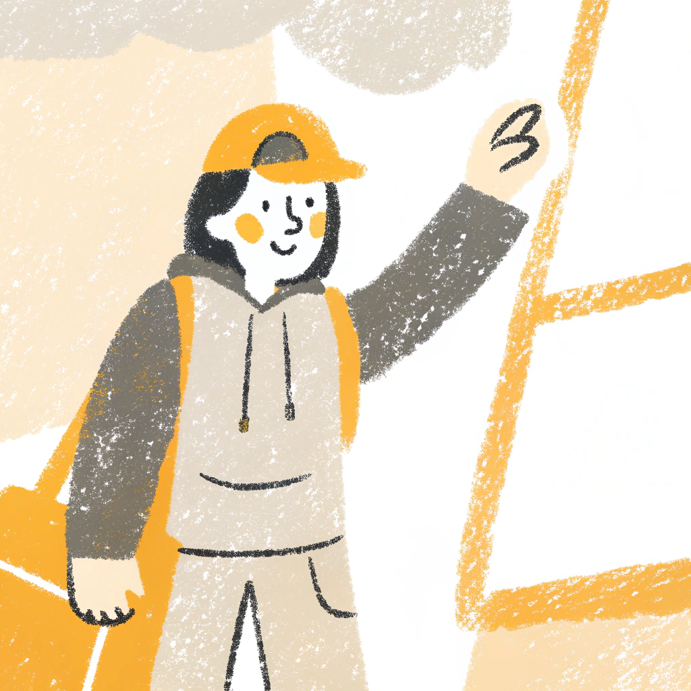
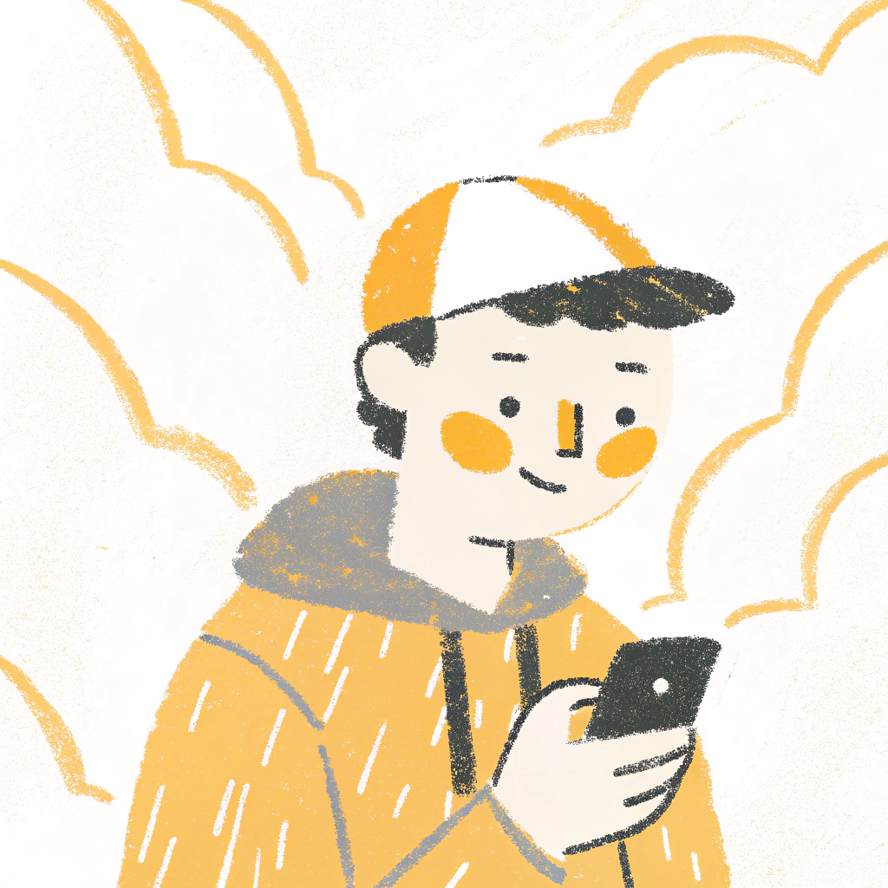
Final Prototype

Participating & Starting up Events
Participte:
The system will recommend events by algorithm, or the user can use filter to filter the events. If there's events that user are interested in, can click on "heart" to saved, swipe right to delete. If wanted to participate in, then can click on the card and answer the questions that was set by the host and sent application.
Start up :
Click on the "plus" to create new events. Besides from filled in the basic information of the events, like topic, time, venue, the host can select how emergent this event is which will lead to different boradcast and different chatroom mechanism.
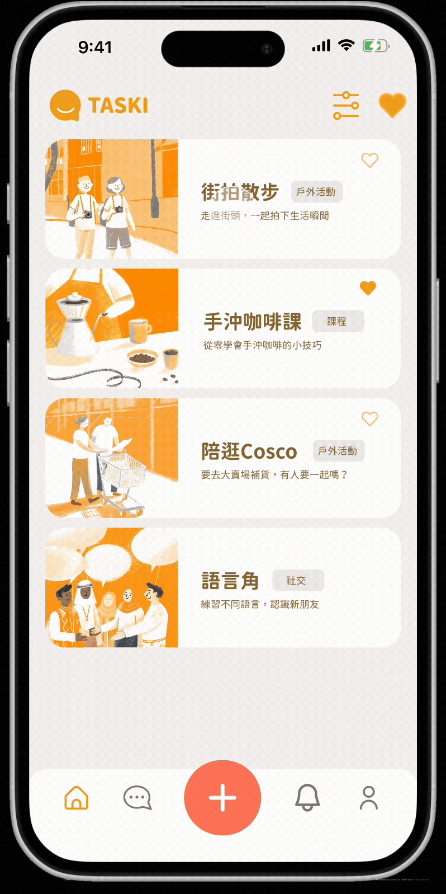
Event Matching
Matching Result Page:
Here, the succesfull matched-task will be shown. Also, together with the link to 1-1 chatroom.
Application Page:
In this page, all the application to your task will be shown. You can preview all the scores toward your customize questions in one glance. And clicking into the application card can see more detail answer and decide to "reject" or "accept".
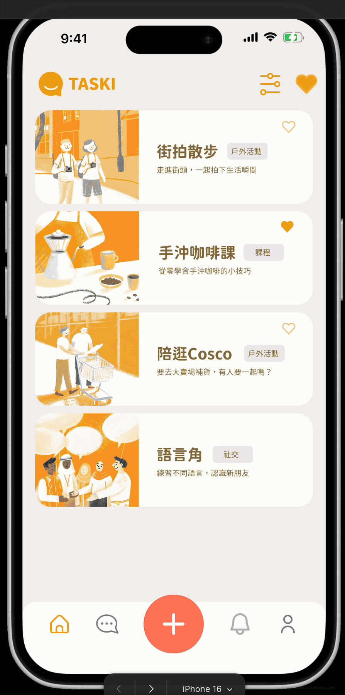
Chatroom
The chatroom is time-limited in order to put focus on getting task done. The users have to discuss the meet-up information, like when and where to meet and create the event within the limit time, or else the chat room will just vanish and the match will be cancelled. The time limit depends on the emergency level the host set up when publishing the task.
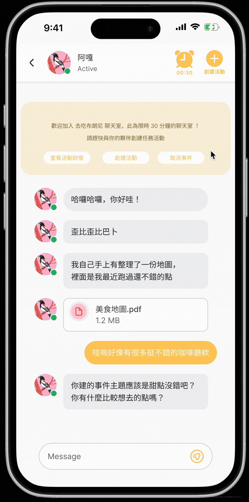
Personal Profile
Photo Gallery:
After the event, user can upload the photo in that event and add some caption, not only to keep the memory but also serve as safety verification for other participants who wants to join your event.
No-show Rating:
If the user ever no-show in the event, the rating will increase. This can be an indicator go out with this user or not.
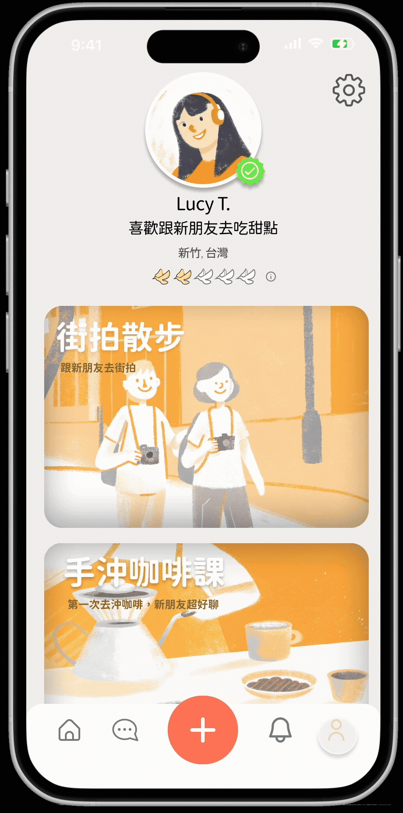
Current Market
We anlysis 4 other competitors, and find out that our app has the leading advantage
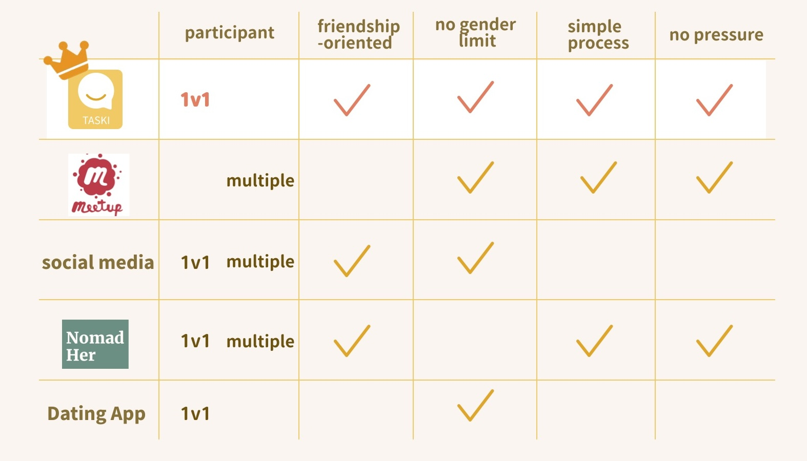
Interview
We conducted semi-structured intreview to find the real user needs. We interviewed 7 university students with different backgrounds and personalities. We focus on scenarios where participants wanted someone to join them to discover the underlying motivation and challenge of the process.
The interviews revealed that some frequently give up on activities due to not finding suitable task-buddies. Users desire fast, low-commitment matching without long conversations. Awkwardness and fear of incompatible personalities are major blockers for finding a task buddy online.
“Enjoys attending large-scale events with someone to share costs, but finds it stressful to be the host due to the risk of others not showing up. Prefers finding companions who match their vibe and energy."
- Emily, Extorvert
“Enjoys having someone to share free-time activities with, but often struggles to align schedules or interests with friends, making plans hard to realize. Hopes to find someone with a compatible personality to create meaningful memories together."
- Amy, Introvert
Insight:
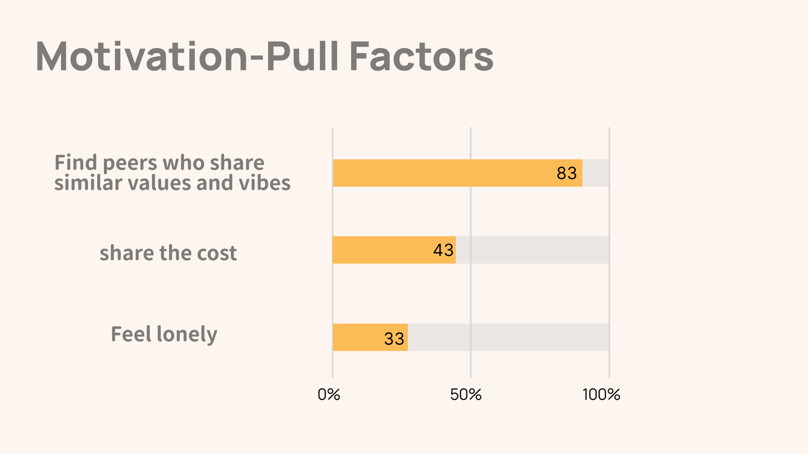
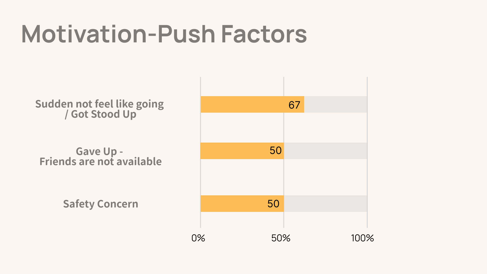
User Journey Map
We identified that our target users want genuine companionship when completing tasks. To better understand their motivations and pain points, we used a user journey map, which allowed us to extract key design insights for further ideation and prototyping.
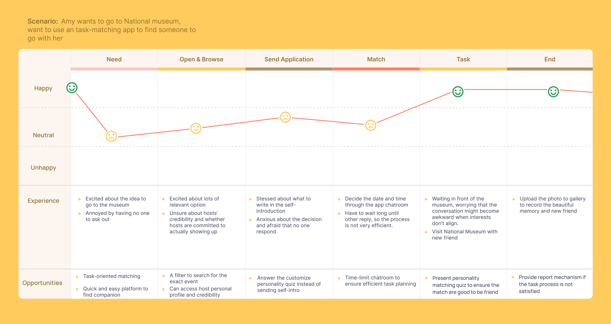
Insights:
1. How Might We make finding companion quick and easy ?
2. How Might We make the task planning more efficient ?
3. How Might We make the user trust the other and be willing to go to a physical task ?
Brainstorming
CityWanderer
CityWanderer Challenge is a 3-weeks summer camp that blends travel, social interaction, and game-like exploration to help young people build genuine human connections. This challenge gave Taski the idea of task-based social matching to build genuine friendship.
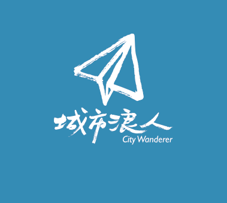
MeetUp
Meetup is a platform that helps people connect through interest-based events. Users can discover activities that match their hobbies and join or host their own events. Meetup's approach to hosting and join events through online platform inspired Taski’s task launching design.
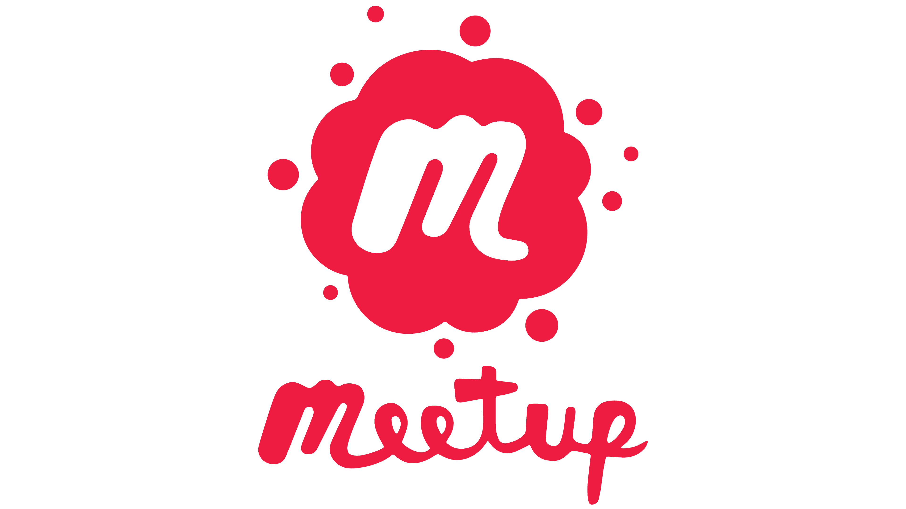
Wireframe
Low fidelity prototype with key feature which later was used for testing.
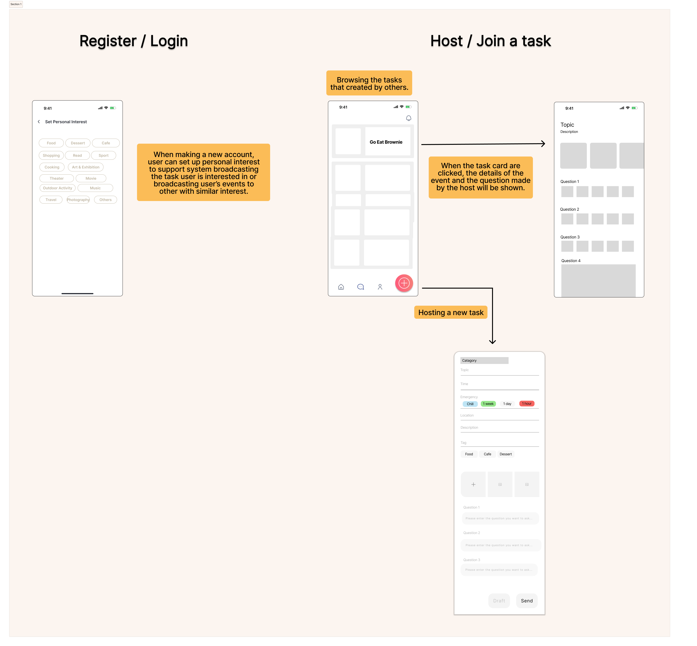
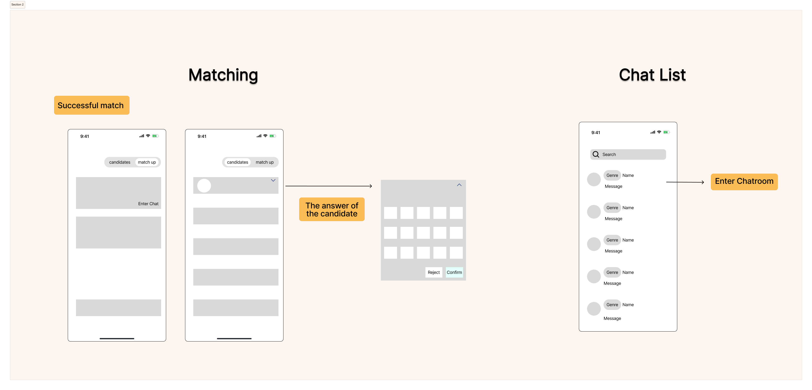
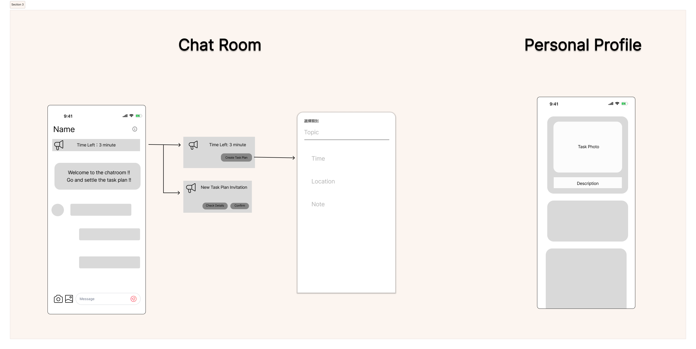
Conclusion
What I've Learned:
User interviews and user feedback is really a game changer, and can help shape the design in completely different ways. Also, working with members from different background really inspires my thought for the idea
Future Works:
This is the MVP of the prototype, in the future we planned to program it into an app and work with university to test on the target user and generate more feedback.